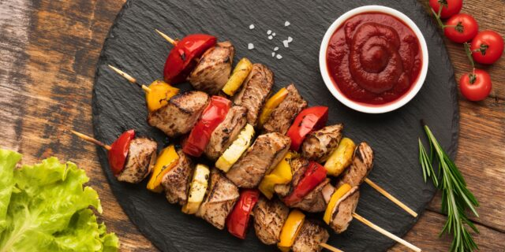

Забудьте о непрожаренном, сгоревшем или невкусном мясе. Приготовить шашлык просто.
Залог вкусного и сочного шашлыка — правильно подобранное и замаринованное мясо.
Традиционный шашлык готовится из баранины. Однако у неё специфический запах, который не всем придётся по вкусу.
Куриный шашлык наверняка понравится многим, потому что получается нежным и ароматным. Для него можно взять грудку или окорочка.
Для шашлыка из говядины подходит толстый край на кости, то есть спинка.
Эти мышцы не особо участвуют в движении животного, а потому они мягче и сочнее.
Но самым популярным вариантом является свинина, а именно — свиная шея. Именно из неё выходит самый сочный шашлык.
Какое бы мясо вы ни выбрали, обязательно проверьте, чтобы оно было качественным. Хорошее мясо не липнет к рукам, появляющаяся при нажатии ямка быстро выравнивается. Оно не должно резко, неприятно пахнуть, быть покрытым кровью или слизью.
При покупке приложите к куску салфетку: если на ней остались розовые следы, значит, мясо подверглось химической обработке.
Парное и замороженное мясо использовать не стоит. Из парного (когда после забоя не прошло и трёх часов) получится жёсткий шашлык. Впрочем, как и из замороженного, поскольку при разморозке вытечет большая часть жидкости. Лучше всего подойдёт охлаждённое мясо.
Ровными кубиками с рёбрами длиной 3,5–4 см. Если кусочки будут меньше, то подгорят, а шашлык будет сухим. Если же слишком большими, то мясо будет очень долго готовиться и может даже не прожариться.
Куриные окорочка лучше освободить от костей. Так вам будет легче нанизывать мясо на шампур, а потом не придётся обгладывать кости.
Из говядины нужно убрать все прожилки: при тепловой обработке они начнут стягиваться, а мясо будет терять сок.
Что касается свинины , то прожилки жира лучше оставить, потому что благодаря им шашлык будет сочным.
Ещё сочнее и ароматнее мясо сделает маринад. Свежее, только что купленное мясо достаточно просто посолить и поперчить и сразу приступать к жарке. Но если вы собираетесь готовить шашлык позже, желательно замариновать мясо.
Очень часто маринад делают на основе лука, кефира, томатного сока, пива или фруктового сока и приправляют специями.
Не рекомендуется вливать в маринад уксус. Он стягивает волокна, отчего хорошее мясо становится сухим. Добавлением уксуса грешат производители уже маринованного мяса для шашлыка. Во-первых, уксусом смягчают очень жёсткое, старое мясо. А во-вторых, им и специями могут замаскировать запах несвежего мяса.
Постарайтесь найти безветренное место, чтобы искры от костра не разлетались по сторонам. В целях безопасности не ставьте мангал рядом с легковоспламеняющимися предметами, например сухостоем, дровами, мусором. Также нельзя устанавливать мангал под свисающими ветками деревьев и вблизи строений.
Очень важно подобрать правильные дрова. Как ни странно, это напрямую влияет на вкус шашлыка.
Категорически не подходят хвойные породы деревьев. При горении такие дрова выделяют смолы. Если мясо ими пропитается, оно приобретёт характерный вкус. Нельзя также брать дерево, покрытое краской или лаком. Например, ножки старого стула. Это негативно отразится и на вкусе мяса, и на вашем здоровье.
Лучше всего подойдут лиственные деревья, например дуб, липа, берёза, и все фруктовые породы, например яблоня, груша, вишня. Дрова должны быть сухими и не слишком большими, иначе они будут долго прогорать.
Если у вас нет времени или возможности искать подходящие дрова, купите готовые угли. Их можно найти практически в любом супермаркете.
Бумажная упаковка из-под углей пригодится для розжига. Не используйте для этого какие-либо химические вещества. Это небезопасно, да и шашлык пропахнет химией.
Лучше всего для жарки шашлыка подойдут шампуры. Можно также жарить мясо на решётке, хоть это и не традиционный метод приготовления шашлыка.
Нанизывать мясо на шампур следует не слишком плотно, иначе оно прожарится не со всех сторон. Но распределять его далеко друг от друга тоже не стоит. Нанизывайте кусочки так, чтобы они немного соприкасались и чтобы между ними не виднелся шампур.
Если кусочки получились разными по размеру, то по краям лучше разместить те, что поменьше. Чтобы мясо было сочным, чередуйте его с небольшими кусочками сала. Если с мяса что-то свисает, то лучше отрезать эти части, потому что во время жарки они превратятся в угольки.
Шашлык должен томиться над тлеющими углями. Если угли покрылись белым пеплом, значит, пора готовить. Если вдруг жара мало, то помашите над мангалом чем-нибудь плоским.
Перед приготовлением киньте на угли несколько веточек розмарина, шалфея или эстрагона. Тогда мясо вберёт в себя аромат душистых трав.
Шампуры нужно выкладывать на мангал плотно. Первые 3–5 минут часто переворачивайте их, чтобы мясо покрылось корочкой и сохранило весь сок внутри. Затем вращайте шампуры каждые 2–3 минуты, чтобы шашлык не подгорел и прожарился равномерно.
Из-за стекающего с мяса жира угли могут снова разгореться. Если это случится, просто сдвиньте шампуры в сторону, перемешайте угли и продолжите готовку.
Сильное пламя можно погасить водой или оставшимся маринадом. Заранее наберите жидкость в бутылку, сделайте в крышке несколько небольших отверстий и при необходимости поливайте угли, сняв или отодвинув шампуры в сторону.
Вопреки расхожему мнению, поливать шашлык не обязательно. Это не гарантирует сочность мяса.
В среднем шашлык готовится от 15 до 25 минут. Всё зависит от температуры углей и природных условий: летом мясо прожарится гораздо быстрее.
Чтобы проверить готовность шашлыка, надрежьте самый толстый кусок мяса и слегка надавите. Если выделяется бесцветный сок, значит, пора снимать шампуры с мангала. Если же сок красного оттенка, то нужно ещё немного поджарить мясо.
Подавать шашлык лучше с оригинальными соусами.
Весь процесс можно посмотреть в видеоинструкции: